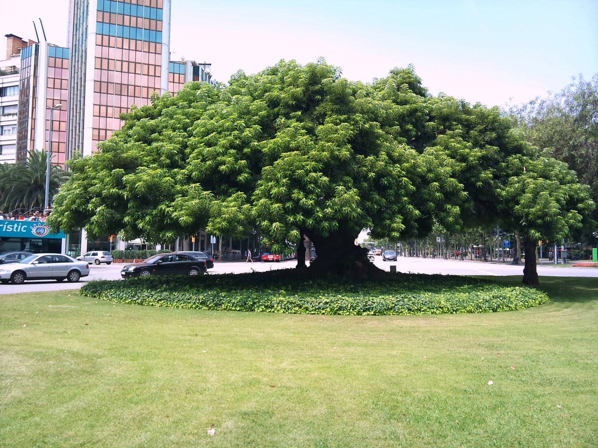

- Familia: Phytolaccaceae.
- Tronco: es notablemente ancho y puede alcanzar diámetros de hasta 2 metros. Es una estructura robusta y leñosa que soporta el gran tamaño del árbol. La forma del tronco puede ser algo bulbosa en la base y se estrecha hacia arriba.
- Corteza: es de color gris a marrón y tiene una textura rugosa. En algunos casos, la corteza puede ser relativamente lisa, pero tiende a agrietarse y desmoronarse en placas con el tiempo.
- Copa: es amplia y extendida, con una forma redondeada o irregular. Las ramas se extienden en varias direcciones, creando una sombra densa y una estructura visualmente impresionante.
- Hoja: son grandes, simples y de forma ovalada o elíptica, con márgenes enteros o ligeramente ondulados. Son de color verde brillante y tienen una textura suave. Pueden alcanzar hasta 20 cm de largo y 15 cm de ancho.
- Flor: son pequeñas, de color blanco a verde, y se agrupan en racimos terminales. Las inflorescencias son densas y pueden ser bastante llamativas cuando el árbol está en flor.
- Fruto: es una drupa pequeña, de color verde cuando está inmadura y que cambia a morado oscuro o negro al madurar. Los frutos son de forma redonda y contienen varias semillas pequeñas.
- Usos: se utiliza en jardinería ornamental debido a su aspecto impresionante y su capacidad para proporcionar sombra en paisajes y parques. También tiene un uso cultural significativo en algunas regiones de América del Sur, donde se le considera un símbolo de fuerza y longevidad.
- Floración: ocurre en verano, con racimos de flores pequeñas que emergen en la parte superior de las ramas. La floración puede durar varias semanas.
- Fructificacion: sigue a la floración, con la producción de frutos que maduran en otoño. Los frutos pueden ser dispersados por aves y otros animales.
- Reproducción: se reproduce principalmente por semillas. Los frutos maduros se cosechan, se secan y se siembran en condiciones adecuadas para germinar. La planta también puede ser propagada por esquejes, aunque esto es menos común.
Hoja
Fruto
Tronco